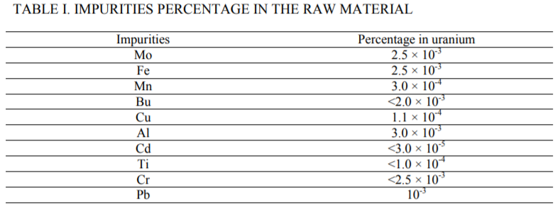
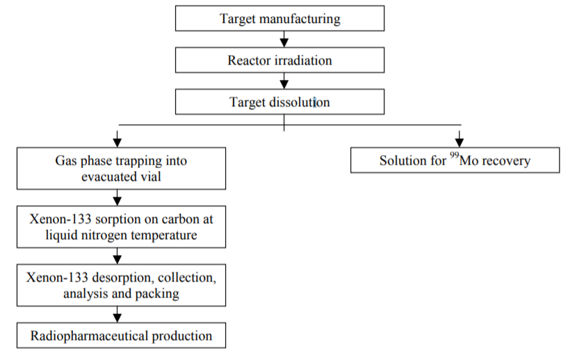
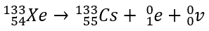
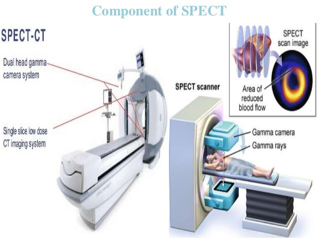

Stage 1 Physics | Science as a Human Endevour | May 2018
Application and Limitation
The use of nuclear physics in medicine has proved to be an important contributor to the diagnosis of the function of organs, or the treatment of diseases such as cancer. Radiotracers or radioactive tracers are the main technology used in nuclear medicine. These are made of the radioactive isotope of an element that have an unstable nucleus and therefore, in an attempt to become stable undergo radioactive decay. Usually, radiation is dangerous and can seriously harm living organisms, however, when used in small, controlled amounts, radiotracers can be used to diagnose organic functions and even treat diseases like cancer. Xenon-133 (Xe-133) is a radiotracer/radiopharmaceutical used for the imaging of the lungs to assess and diagnose its function and any problems within it. Xe-133 can also be used to measure cerebral circulation (flow of blood to and from the brain).
Xenon-133 is a daughter nuclide of a Uranium-235 fission reaction induced in a nuclear reactor. The picture to the right (Manual for reactor produced radioisotopes, 2003) shows the radioisotope’s production process. After the fission reaction, contained targets of the uranium are irradiated with thermal neutrons, and then purified of the metals (shown in the table below) in the raw material.
It is then transported to a lab and undergoes a chemical processing procedure that extracts and collects the xenon-133 gas. Finally, it is put in sealed vials that contain up to 4mL of xenon-133.
At room temperature, xenon-133 is a colourless, odourless gas. Its boiling point is -108°C, and because it is a diffusible gas, it can easily pass through cell membranes and exchange through tissue and blood. Like all isotopes of xenon, it has an atomic number of 54; however instead of having 77 neutrons like a natural, stable Xe-131 has, Xenon-133 has 79 neutrons, giving it an atomic mass of 133. Because it has an excess of protons, the nucleus is unstable, and must undergo beta plus decay to become stable.
In beta plus decay, one of its protons decays into a neutron, with the emission of a positron/beta plus particle and a neutrino and a small amount of gamma rays. The daughter nuclide produced from this decay is Cesium-133. This new isotope is stable, and so no longer undergoes radioactive decay, ending the decay chain. Xenon-133 has a physical half-life of 5.243 days. This means it takes approximately 5 days and 6 hours to decay into half of the amount it had originally. Xe-133’s biological half-life however is much shorter. The time it takes for the body to biologically eliminate half of the Xe-133 consumed is 5 minutes.
The main purpose of Xe-133 is to image the lungs, assess its pulmonary function, and also to evaluate cerebral blood flow. This is done using a Single Photon Emission Computed Tomography (SPECT) scanner. When the gas is inhaled, it passes through the alveolar wall in the lungs, through the pulmonary capillary bed, and enters the pulmonary venous circulation of blood. The Xe-133 will be circulated by the blood around the body, and once it returns to the lungs it is all usually exhaled. In the time it is in the blood stream still, it continues to undergo radioactive decay, releasing energy in the form of beta particles and gamma radiation. The Single Photon Emission Computed Tomography (SPECT) scanner is able to detect the gamma radiation emitted from the Xe-133 while it is still in the body, and uses it to create a 3D image of the heart, lungs and brain. Scientists and doctors can use the images from the SPECT scan to study and evaluate the function of the lungs and blood flow, and also diagnose diseases within them. This can include asthma, pulmonary emphysema, bronchiectasis, carcinoma of the lung, and pulmonary embolism. These are all serious diseases. The fact that they can all be detected with this small radiotracer is a huge advantage in the field of medicine. (Application)
While Xenon-133 has many benefits and advantages, it is not perfect. There are a few risks, precautions and possible side effects that should be considered before using it. First of all, Xe-133 is radioactive. While in isn’t harmful in small doses, the use of this radiotracer is only permitted for a doctor who is has or is under the supervision of someone who has received specialized training in nuclear medicine.
Furthermore, before using this radiotracer, there are several things that need to be considered that may affect the body in unexpected ways. If the patient has any allergies to Xenon or other medicines, then that is an obvious indication that they should not use it. Furthermore, it is unknown if this radiotracer will have a different affect on people of very young, or very old ages, as suitable studies and tests have not been run yet. This is the same case for pregnant women, scientists are unsure if they would be affected by Xe-133, but recommend that they don’t take the risk. (Limitation)
Patients should also know that there are several possible side effects that can occur after using it. These include coughing, dizziness, difficulty swallowing, dizziness, fast heartbeat, hives, itching, puffiness or swelling of the eyelids or around eyes, face, lips or tongue, shortness of breath, skin rash, tightness in chest, unusual tiredness or weakness, or wheezing. (Limitation)
Radiotracers and Radiopharmaceuticals are one of the most useful and significant technologies in nuclear medicine. Xenon-133 is no exception. When used with the Single Photon Emission Computed Tomography scanner, Xe-133 can be used to image the lungs, brain and heart, to assess their functions and diagnose diseases. Even though it has a few disadvantages and limitations, such as all the possible side effects, and untested precautions, the applications and benefits of this technology surely outweigh them. This report demonstrates and links to the SHE topic Application and Limitation as it shows how scientific knowledge, understanding and inquiry can be applied with Xenon-133 to study organ functions and diagnose diseases. It also explained the limitations of the technology so far.
Chemistrylearner.com. (2017). Xenon-133 Source, Symbol, Properties, Uses, Precautions | Chemistry Learner. [online] Available at: http://www.chemistrylearner.com/xenon-133.html [Accessed Feb. 2018].
World-nuclear.org. (2018). Radioisotopes in Medicine | Nuclear Medicine - World Nuclear Association. [online] Available at: http://www.world-nuclear.org/information-library/non-power-nuclear-applications/radioisotopes-research/radioisotopes-in-medicine.aspx [Accessed Feb. 2018].
Drugs.com. (2018). Xenon xe 133 Inhalation Advanced Patient Information - Drugs.com. [online] Available at: https://www.drugs.com/cons/xenon-xe-133-inhalation.html [Accessed Mar. 2018].
Drugs.com. (2018). Xenon Xe 133 Gas - FDA prescribing information, side effects and uses. [online] Available at: https://www.drugs.com/pro/xenon-xe-133-gas.html [Accessed Mar. 2018].
Drugs.com. (2018). Xenon Xe 133 Drug Information, Professional. [online] Available at: https://www.drugs.com/mmx/xenon-xe-133.html [Accessed Mar. 2018].
Allesi, A. (2015). Dispensing Xenon Xe-133 Gas. [online] Biodex. Available at: http://www.biodex.com/nuclear-medicine/blog/dispensing-xenon-xe-133-gas [Accessed Apr. 2018].
Manual for reactor produced radioisotopes. (2003). [pdf] Austria: International Atomic Energy Agency, pp.248 - 251. Available at: https://www-pub.iaea.org/MTCD/Publications/PDF/te_1340_web.pdf [Accessed 6 May 2018].